Manuel utilisateur
Copyright © 2013 Total
Résumé
Ce document est le manuel utilisateur du module Arbre de défaillance de GRIF 2013
Table des matières
La fenêtre principale est décomposée en plusieurs parties :
Barre de titre: La barre de titre indique le nom du module et le nom du fichier en cours d'édition.
Barre de menu: La barre de menu permet d'accéder à toutes les fonctions de l'application.
Barre d'icônes (raccourcis): La barre de raccourcis est une barre (horizontale) d'icônes permettant d'accéder plus rapidement aux fonctions usuelles.
Barre d'outils: La barre d'outils (verticale) permet de sélectionner les éléments à utiliser pour la modélisation.
Zone de saisie: Un maximum de place a été laissé à la zone de saisie graphique pour permettre de réaliser le modèle.
Arborescence: L'arborescence est entre la zone de saisie et la barre d'outils. Elle permet de naviguer dans les pages et groupes du document.
Ensemble des tableaux: Les tableaux de données sont regroupés dans des onglets à droite de la zone de saisie.
Le menu Fichier contient les commandes classiques: ouvrir, fermer, enregistrer, imprimer, etc. Il est possible d'accéder aux propriétés (nom, date de création, créateur, description, version) et de les modifier par les Propriétés du document. La fonction Statistiques du document permet d'avoir un certain nombre d'informations sur la taille du modèle (nombre de pages, nombre de groupes, etc.). Il y a également la possibilité d'accéder à un certain nombre (paramétrable) de fichiers dernièrement modifiés.
La barre d'icônes placée juste en dessous des menus propose des raccourcis pour la plupart des commandes de Fichier:
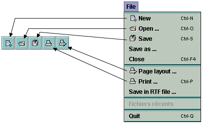Le menu Edition contient toutes les commandes nécessaires à l'édition du modèle en cours de saisie graphique.
La barre d'icônes placée juste en dessous des menus propose des raccourcis pour la plupart des commandes de Edition:
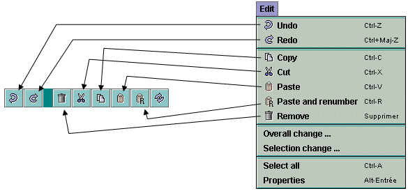Le menu Outils contient toutes les commandes nécessaires à la gestion du modèle en cours (gestion des pages, alignements, options...).
La barre d'icônes placée juste en dessous des menus propose des raccourcis pour la plupart des commandes de Outils:
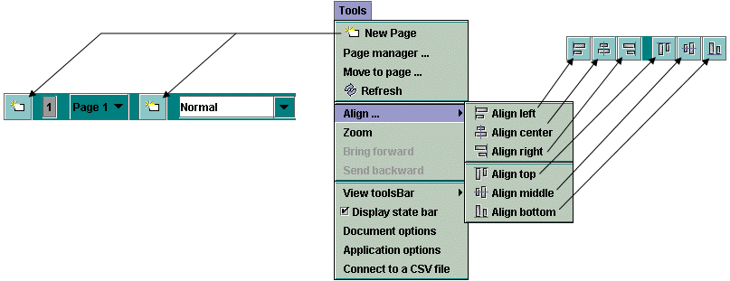Le menu Document permet d'accéder à tous les documents en cours de modification ou de réalisation.
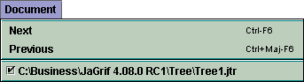Le menu Arbre de défaillance contient toutes les commandes nécessaires à la réalisation de la partie graphique du modèle en cours.
La barre d'icônes verticale placée à gauche de l'application propose des raccourcis pour chacune des commandes de Arbre de défaillance (cf. Barre d'outils verticale).

Le menu Données et Calculs est divisé en deux parties: la gestion des données (création et gestion des différents paramètres) et le paramétrage/lancement des calculs (durée de calcul, calcul recherchés...).
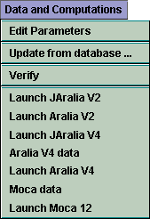Remarque: La fonction Vérifier permet de détecter les éventuelles erreurs du modèle: données sans valeurs (égales à NaN), événements ayant le même nom ...
Le menu Groupe concerne la saisie et la gestion de sous-modèles regroupés en sous-ensembles indépendants.
La barre d'icônes placée juste en dessous des menus propose des raccourcis de deux des commandes de Groupe:

Enfin le menu Aide donne accès à l'aide en ligne, la rubrique d'aide et à l'"A propos".
Chaque modèle utilisé en sûreté de fonctionnement possède sa propre iconographie. L'ensemble de symboles graphiques relatifs aux arbres de défaillances est représenté sur la barre d'icônes placée verticalement à gauche de la fenêtre de saisie.

La barre d'outils verticale comporte les éléments suivants :
Sélection permet de sélectionner les éléments désirés.
Porte "ET" pour ajouter une porte logique de type "ET" (représentée par une figure géométrique à base plate).
Porte "OU" pour ajouter une porte logique de type "OU" (représentée par une figure géométrique à base courbée).
Porte "K sur N" pour ajouter une porte logique de type "K sur N" (représentée par une figure géométrique à base plate et doublée).
Porte "Commentaire" pour insérer un bloc dans le modèle comportant uniquement des commentaires (représenté par un rectangle).
Evénement élémentaire représenté par un losange.
Evénement de base représenté par un cercle.
Evénement à développer représenté par un deux losanges l'un dans l'autre.
Evénement "Maison" représenté par une forme rappelant vaguement la forme d'une maison.
Négation représentée par un petit cercle.
Lien (un seul) pour créer une connexion (et une seule) entre une entrée (porte) et une sortie (porte ou événement).
Liens (plusieurs) pour créer des connexions entre les entrées (portes) et les sorties (portes et événements).
Renvoi identique représenté par un triangle.
Evénement répété représenté par un cercle.
Commentaire pour ajouter du texte directement sur le graphique.
Affichage dynamique pour afficher la valeur d'un élément du modèle.
Courbe pour tracer des courbes représentant des calculs sur le modèle.
Pour créer ou modifier des données, un ou plusieurs tableaux (suivant le module) sont disponibles dans le menu Données et Calculs, et dans les onglets à droite de la vue. Tous les tableaux de données de GRIF 2013 fonctionnent de la même manière.

Les tableaux/panneaux d'édition de données sont composés de 3 parties:
La partie supérieure contenant les boutons.
La partie principale contenant le tableau de données.
La partie inférieure indiquant l'utilisation faite de la donnée sélectionnée.
 | Enregistre le tableau dans un fichier texte. |
 | Ouvre le tableau dans un éditeur de texte (celui étant défini dans les options). |
| Ouvre le gestionnaire de colonnes. | |
| Lorsque le bouton est enfoncé, un clic dans le tableau provoque la sélection dans la zone de saisie. | |
| Affiche la partie permettant de filtrer les données. | |
 | Modification multiple sur l'ensemble des données sélectionnées. |
 | Crée une nouvelle donnée. |
| Duplique la donnée sélectionnée (demande un nouveau nom et fait une copie) | |
| Supprime la (ou les) donnée(s) sélectionnée(s). | |
 | Permet d'activer ou non le filtrage des données. |
| Permet de définir le filtre à appliquer sur les données. |
Le filtrage permet de n'afficher que ce qui est utile dans un tableau. Il est possible de combiner plusieurs critères de filtrage, comme ci-dessous :
Sélectionner ou pour choisir le type d'association entre chaque ligne (critère du filtre). Une ligne est une expression booléenne composée de 3 parties:
la première est la colonne sur laquelle est effectué le filtre;
la deuxième est le comparateur;
la troisième est la valeur à laquelle la donnée sera comparée.
Si l'expression booléenne est vraie, la donnée sera gardée (affichée), sinon la donnée sera masquée. Lorsque le filtre est activé, sa valeur est affichée entre < et >.
Il est possible de double-cliquer sur l'en-tête de chaque colonne pour trier les données suivant cette colonne. Un premier double-clic triera les données dans l'ordre croissant (petit triangle vers le haut). Le deuxième double-clic sur le même en-tête triera dans l'ordre décroissant (petit triangle vers le bas).
Un tableau peut-être composé de nombreuses colonnes, il est possible que des colonnes soient inutiles dans certains cas. La colonne "reliée à la base" est inutile lorsqu'aucune base de données n'est disponible. Il est donc possible de choisir les colonnes qui seront affichées ainsi que leur ordre. Pour cela, il suffit de faire un clic droit sur un en-tête du tableau, ou de cliquer sur le bouton , la fenêtre suivante s'ouvre :

Il est possible de choisir les colonnes à afficher en cochant (ou décochant) les cases correspondantes. Les flèches situées à droite permettent de monter et descendre les colonnes dans la liste de manière à choisir l'ordre des colonnes. La case Désactiver le tri permet de désactiver le tri des données. Cela permet d'améliorer les performances de l'application avec des modèles très complexes.
Pour modifier une donnée, il suffit de double-cliquer sur la case à modifier. Lorsque plusieurs lignes sont sélectionnées (à l'aide des touches CTRL ou SHIFT), il est possible de faire des modifications sur l'ensemble des données sélectionnées en utilisant le bouton . Une fenêtre s'ouvre alors pour permettre les modifications.
Le tableau inférieur du tableau de données, indique quels sont les éléments du modèle qui utilisent la donnée sélectionnée. La première colonne de ce tableau indique le nom de ces éléments, la deuxième indique leur localisation dans le document (page, groupe). Un clic sur une ligne de ce tableau inférieur ouvrira la page où est situé l'élément et le sélectionnera.
Comme indiqué précédemment les tableaux sont accessibles par le menu Données et Calculs, dans ce cas chaque tableau est affiché dans une fenêtre indépendante.
Pour éviter de multiplier les fenêtres ouvertes, tous les tableaux ont été rassemblés dans des onglets dans la partie droite de l'application. Cette partie est "rétractable" à l'aide des petites flèches en haut de la séparation avec la zone de saisie.


Vous pouvez développer ou réduire un noeud de manière récursive en faisant un clic droit sur le noeud.
Comme pour les tableaux de données à droite, il est possible de "cacher" cette arborescence.
Pour saisir les différentes Portes, il suffit de sélectionner le symbole correspondant sur la barre d'outils verticale. Ensuite à chaque clic gauche de la souris sur la surface de saisie graphique, un nouvel élément est créé. Chacune des portes du modèle est caractérisée par cinq paramètres:
Un numéro: le numéro et le type sont les vrais identifiants des portes (ceux qui seront utilisés par le moteur de calcul). C'est pour cette raison que lorsque l'utilisateur souhaite changer le numéro de certaines portes il doit faire attention au fait que deux portes ne peuvent pas avoir un numéro identique. Ils sont incrémentés automatiquement au fur et à mesure de la création de nouveaux éléments.
Un nom: C'est un paramètre qui est défini automatiquement et qui ne peut pas être modifié par l'utilisateur. Le nom de chaque porte est composé de son "type" suivit de son "numéro" (ex.: "And1" ou "KofN3").
Un entier "K sur N": Ce champ n'est accessible que dans le cas des portes de type K sur N. Il permet à l'utilisateur de choisir la valeur de K (par défaut K vaut 1).
Un commentaire: Ce champ permet d'ajouter du texte à l'intérieur de la porte. Cette fonction a pour but de faciliter la lecture du modèle (en spécifiant la particularité de ces éléments).
Un type: Une fois qu'une porte a été créée, il est possible de modifier son type parmi les cinq types disponibles au niveau de la liste déroulante.

Pour saisir les Evénements du modèle, il suffit de sélectionner le symbole correspondant sur la barre d'outils verticale. Ensuite à chaque clic gauche de la souris sur la surface de saisie graphique, un nouvel élément est créé. Chacun des événements du modèle est caractérisé par cinq paramètres:
Un numéro: le numéro et le type sont les vrais identifiants des événements (ceux qui seront utilisés par le moteur de calcul). C'est pour cette raison que lorsque l'utilisateur souhaite changer le numéro de certains événements il doit faire attention au fait que deux événements ne peuvent pas avoir un numéro identique. Ils sont incrémentés automatiquement au fur et à mesure de la création de nouveaux éléments.
Un nom: Le nom par défaut qui est attribué aux événements est Evti pour le ième élément créé. Il est conseillé à l'utilisateur de remplacer ce nom par quelque chose de plus mnémotechnique afin de faciliter la lecture du modèle.
Un commentaire: Ce champ permet d'ajouter du texte à l'intérieur de l'événement. Cette fonction a pour but de faciliter la lecture du modèle (en spécifiant la particularité de ces éléments).
Une loi: C'est l'élément qui va servir à modéliser l'aspect aléatoire de l'événement. L'utilisateur a la possibilité de choisir parmi vingt trois lois qui doivent dans un deuxième temps être paramétrées (cf. ultérieurement la description détaillée des loi).
Un type: Une fois qu'un événement a été créé, il est possible de modifier son type parmi les quatre types disponibles au niveau de la liste déroulante.
Pour chaque porte ou événement, il est possible via un clic-droit d'indiquer qu'elle/il est initiateur. Cela doit s'entendre dans le sens "arbre d'événement" du terme. Dans un arbre d'évement, l'événement initiateur est celui qui arrive avant que les barrières ne mettent le système dans un état de sécurité. Pour que l'événement redouté se produise il faut donc que l'événement initiateur survienne après la défaillance des barrières. Le fait de positionner un évenement initiateur signifie qu'il devra arriver après les événements non-initiateurs. Cela aura un impact sur le calcul de fréquence UFI, cette propriété n'a pas d'impact sur les calcul de proba ou de Lambda équivalent.
Une fois les portes et les événements créés, il faut les connecter entre eux afin d'établir la logique de l'arbre. Il existe deux types de connexions possibles: les connexions "porte -> porte" et les connexions "porte -> événement". Pour réaliser une connexion, il suffit de:
Cliquer sur l'icône correspondante de la barre d'outils verticale.
Sélectionner la porte de départ en faisant un clic gauche sur la zone spécifique (point pour les portes "ET", croix pour les portes "OU"...) et laisser le bouton enfoncé.
Faire glisser la souris jusqu'à l'élément qui doit être connecté.
Relâcher la souris.

Remarque: L'icône ci-dessus ne permet de créer qu'un seul lien à la fois. Si l'utilisateur souhaite en créer plusieurs à la suite sans avoir à resélectionner à chaque fois l'icône de création de liens, il peut utiliser l'icône juste en dessous: .

C'est une porte un peu particulière qui permet d'inverser la logique du sous-arbre qui est en aval.
Pour insérer une "Négation" dans un arbre il suffit de:
modifier le type d'une porte existante à l'aide de la liste déroulante;
OU créer une nouvelle porte de type "Négation":
Faire un clic gauche sur l'icône correspondante de la barre d'outils verticale.
Ensuite à chaque clic gauche de la souris sur la surface de saisie graphique, un nouvel élément est créé.
Il suffit ensuite de paramétrer et connecter la "Négation" comme une porte classique: relier la partie haute (au-dessus du rond) à la partie basse d'une porte et relier la partie basse (au-dessous du rond) à la partie haute d'un événement ou d'une porte.
Pour ajouter un commentaire n'importe où sur le modèle il suffit de cliquer sur l'icône représentant un crayon et de se placer sur un endroit de la zone de saisie graphique. La boîte de dialogue Commentaire s'ouvre et il est alors possible de saisir le commentaire désiré.
Remarque : le caractère "%" est un caractère spécial, il doit être doublé "%%" pour pouvoir afficher "%".
Il peut s'avérer intéressant d'afficher sur le modèle la valeur d'un paramètre ou de toute autre information dont la valeur peut être modifiée. De la même manière il est parfois utile d'afficher le résultat d'un calcul à côté du système auquel il correspond. Pour cela, il suffit d'utiliser des champs dynamiques en sélectionnant l'icône correspondante dans la barre d'outils verticale:
Les champs dynamiques sont en quelque sorte des "commentaires améliorés". En effet, non seulement ils permettent de saisir des mots ou des phrases mais il est également possible d'insérer des valeurs du modèle ou des résultats.
Si vous souhaitez accéder à une information sur une donnée de votre modèle la syntaxe est la suivante :
$data.'type de donnée'.'champ servant à la recherche de la donnée'('valeur que doit vérifier le champ').'information que l'on souhaite afficher'
Nous pouvons donc interpréter la première ligne de l'image ci-dessus comme : Je cherche un "parameter" dont le "name" est "lambda" et je souhaite afficher sa "value". Lorsque les premières lettres sont saisies, un système de complétion aide à saisir le script sans erreur.
Si vous souhaiter accéder à un résultat dans la banque de résultats, la syntaxe est la suivante :
$result.bank('chemin du calcul dans la banque').target('resultat cible').'ce que vous souhaitez afficher'.'à quel moment'
Nous pouvons donc interpréter la première ligne de l'image ci-dessous comme : je cherche un résultat dans la banque "default-Moca" pour la cible "stat3 de la variable available", je souhaite afficher la "value" au "dernier" temps. Si last avait été remplacé par time(10), on aurait obtenu la valeur à t=10. Lorsque les premières lettres, un système de complétion aide à saisir le script sans erreur, il ouvre même une fenêtre pour sélectionner la cible.
Il est aussi possible d'afficher une synthèse du calcul en remplaçant 'ce que vous souhaitez afficher' par summary. Dans ce cas summary est le dernier mot du script.
Un bouton a été rajouté dans la version 2013, il permet de générer facilement un script de donnée du modèle.
De manière générale tous les éléments graphiques peuvent être édités en faisant un double-clic ou avec le menu Edition - Propriétés, ou encore avec la combinaison de touches Alt + Entrée.
Lorsque l'utilisateur fait un clic droit sur une porte, il a la possibilité de modifier n'importe quel paramètre (excepté le nom):

changer le numéro;
spécifier la valeur de K si la porte est de type "K sur N";
lire et/ou modifier la partie commentaire;
modifier le type de la porte parmi les cinq types disponibles dans la liste déroulante:
Porte "OU": une logique de type "OU" est appliquée aux éléments connectés en aval.
Porte "ET": une logique de type "ET" est appliquée aux éléments connectés en aval.
Porte "K sur N": une logique de type "K sur N" est appliquée aux éléments connectés en aval.
Porte "Commentaire": cette porte n'a aucun impact du point de vue logique et sert simplement à commenter la branche sur laquelle elle se trouve.
Porte "Négation": cf. précédemment.
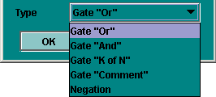
Lorsque l'utilisateur fait un clic droit sur un événement, il a la possibilité de modifier n'importe quel paramètre:

changer le numéro;
saisir le nom de l'événement;
lire et/ou modifier la partie commentaire;
lire et/ou modifier la loi qui régit l'événement.
modifier le type parmi les quatre types disponibles dans la liste déroulante:
Evénement élémentaire;
Evénement de base;
Evénement à développer ultérieurement;
Evénement "Maison".
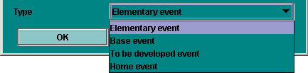La dénomination de ces événements a simplement un impact de type "graphique" sur la structure de l'arbre. Il n'y a aucun impact sur la fonction logique qui sera générée pour réaliser les calculs. Le but est simplement d'aider à la (re)lecture de l'arbre de défaillance.
Le paramétrage de la partie loi se fait en plusieurs étapes:
Choisir la loi parmi les vingt trois disponibles de la liste déroulante.
Paramétrer la loi (une liste déroulante des paramètres du modèle est accessible pour chaque champ à remplir).
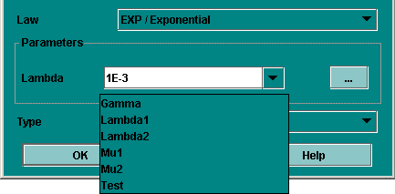Possibilité d'introduire des calculs d'incertitude pour chacun des paramètres avec choix de la loi et des paramètres correspondants (cf. ultérieurement la description détaillée des calculs d'incertitudes sur les paramètres).

La notion de renvoi (ou élément répété) a été introduite dans le module Arbre de défaillance pour quatre raisons essentielles :
Faire communiquer des différentes portions du modèle entre elles;
Eviter les modèles graphiquement trop chargés et ainsi préserver la lisibilité;
Faciliter l'utilisation de la fonction Grouper (cf. ultérieurement);
Mettre en évidence l'essentiel et l'accessoire.
Soit un arbre de défaillances comportant trois événements de base, une porte "OU" (événement redouté) et une porte "ET":
Le but ici est de créer un renvoi vers la porte appelée "And2" afin de pouvoir dissocier le sous-arbre de "And2" de l'arbre principal. Voici la manière de procéder:
Supprimer le lien existant entre la porte "Or1" et la porte "And2".
Faire un clic gauche sur l'icône de la barre d'outils verticale puis cliquer sur la porte "And2".
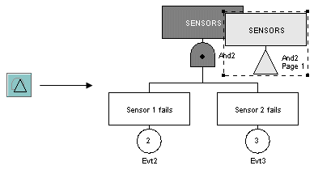Connecter le renvoi ainsi créé avec la porte "Or1".

A côté du renvoi sur la porte "And2" figurent le nom de la porte d'origine et le numéro de la page à laquelle se trouve la porte d'origine.
Tout en étant liés du point de vue "logique de calcul", les deux arbres sont maintenant totalement indépendants du point de vue graphique. Il est maintenant possible de les placer sur des pages différentes ou dans des groupes différents (cf. ultérieurement).
Du point de vue logique, il est possible qu'un événement ait "un impact" sur plusieurs "branches" d'un même arbre. Afin de modéliser correctement ce cas de figure, il est nécessaire de dupliquer cet événement. Pour cela, il suffit de sélectionner l'icône correspondante de la barre d'outils verticale puis de cliquer sur l'événement à dupliquer:
Il suffit maintenant d'insérer l'événement dupliqué dans le modèle sachant qu'à chaque instant son état sera égal à celui de l'événement d'origine.
Remarque: Evidement, si l'événement d'origine est supprimé alors l'événement dupliqué l'est aussi.
L'utilisation des renvois nous a permis d'obtenir deux réseaux n'ayant plus aucun lien graphique entre eux. Ils communiquent uniquement par le biais des renvois. Cela peut être mis à profit, par exemple, pour mettre chaque sous partie sur une page différente :
Créer une nouvelle page en cliquant sur l'icône correspondante de la barre d'icône (ou bien utiliser le menu Outils - Nouvelle Page). Une page numéro 2 est ainsi créée.
Revenir sur la page 1 en sélectionnant la page à l'aide du sélectionneur de page de la barre de commandes idéographiques (ou bien utiliser le menu Outils - Gestionnaire de pages).
Sélectionner la partie à déplacer.
Ouvrir le menu Outils - Changement de page.
Sélectionner la page 2 et faire . La partie sélectionnée se trouve transférée sur la page 2 mais elle continue à communiquer avec la page 1 grâce aux renvois.
Remarque: Dans le cas de gros modèles, le découpage décrit ci-dessus est très utile.
Une autre possibilité pour saisir un réseau est de mettre en œuvre la notion de Groupe. Cela est rendu possible grâce aux renvois et au fait que les données soient globales pour le document, cela permet de créer des sous-parties bien séparées :
Sélectionner une sous-partie.
Utiliser le menu Groupe - Grouper. Une boîte de dialogue s'ouvre alors et demande le nom à donner au groupe en cours de création.
Entrer le nom désiré et cliquer sur (par exemple "System 1"). Le groupe est créé: le sous réseau est remplacé par un rectangle affecté du nom choisi.
Chaque groupe peut ensuite être édité, renommé ou dissocié grâce aux commandes contenues dans le menu Groupe. Le groupe peut aussi être édité avec un clic droit ou avec la "flèche vers le bas" située à gauche du gestionnaire de pages. En mode Edition, le sous-modèle peut alors être modifié à la convenance de l'utilisateur. Lorsque la modification est terminée on revient à la figure précédente en quittant l'édition de groupe avec le menu Groupe - Quitter Edition Groupe, ou en utilisant la "flèche vers le haut" située à gauche du gestionnaire de page. Il est aussi possible d'attribuer une image à un groupe avec la commande Groupe - Changer d'image.
Remarque: Il est possible de grouper des groupes de manière récursive.
Afin de faciliter la création de modèle, le module Arbre de défaillance dispose de différentes aides à la saisie permettant d'automatiser les actions chronophages.
Pour aider à la saisie des parties répétitives des Arbre de défaillance, des mécanismes de "Copier / Coller et Renuméroter " ont été mis en place. Cette opération s'effectue en six étapes :
Sélectionner la partie à copier.
Cliquer sur l'icône , ou utiliser le menu Edition - Copier ou encore le raccourci Ctrl + C.
Cliquer sur l'icône , ou utiliser le menu Edition - Coller et Renuméroter ou encore le raccourci Ctrl + R.
Une fenêtre apparaît et permet de choisir le numéro de départ de la renumérotation (attention à ne pas donner des numéros déjà utilisés dans le modèle).
La partie préalablement sélectionnée est copiée et la copie est sélectionnée.
Déplacer la copie vers l'emplacement désiré.
On obtient alors l'arbre représenté sur la figure ci-contre :
les portes Or1 et And2 de l'arbre original sont devenus Or3 et And4 pour la copie;
les événements Evt1, Evt2 et Evt3 de l'arbre original sont devenus Evt4, Evt5 et Evt6 pour la copie.

Lors d'une copie vers un nouveau document, les éventuels conflits de données sont gérés dans la fenêtre suivante :

Utiliser les données du document de destination, ceci remplacera les occurrences à la donnée du document source par la donnée portant le même nom dans le document de destination.
Créer une copie pour toutes les données en conflit, ceci remplacera les occurrences à la donnée du document source par copie portant un nom suffixé par "copie".
Régler les conflits manuellement, ceci permet de choisir s'il faut utiliser l'existant ou pas suivant les données. Il est aussi possible de spécifier le nom de la copie en double-cliquant sur la case de la colonne "document de destination". Les noms inscrits dans cette colonne sont naturellement masqués lorsque la case Utiliser existant est cochée, puisque c'est la donnée qui est déjà dans le document de destination qui sera utilisée.
La commande "Copier / Coller et Renuméroter" permet en fait de créer de nouvelles "instances" c'est à dire de nouveaux sous-arbres similaires au sous-arbre copié:
Même structure graphique;
Mêmes paramètres;
Le numéro et le nom des événements et des portes changent (nouveau nom: Evti pour les événements et "type de porte"i pour les portes où i est le nouveau numéro);
Mêmes commentaires.
Lorsque des renvois identiques font partie de la sélection qui va faire l'objet d'un "Copier / Coller et Renuméroter", alors ils vont rester inchangés pour la copie. Ils vont toujours "pointer" vers la même porte si celle-ci ne fait pas partie de la copie.
Sur l'exemple ci-dessus, la porte Or1 et l'événement Evt1 ont bien été renumérotés. Concernant le renvoi vers la porte And2, il n'a pas été modifié.
Lorsque une porte qui fait l'objet d'un renvoi fait partie de la sélection qui va être "Copier / Coller et Renuméroter" et si le renvoi lui-même n'y est pas, alors elle va être renumérotée de manière classique.
Sur l'exemple ci-dessus, tous les événements et toutes les portes ont été renumérotés normalement.
Lorsque des renvois identiques (et leur place d'origine correspondante) font partie de la sélection qui va faire l'objet d'un "Copier / Coller et Renuméroter", alors de nouveaux renvois vont être créés et ils seront liés aux nouvelles portes.

Sur l'exemple ci-dessus, la porte faisant l'objet d'un renvoi a été renumérotée (And2 -> And4) donc son renvoi a lui aussi été modifié.
Il est possible de naviguer entre les différents renvois d'un élément, en utilisant le menu Outils/Naviguer vers les renvois. Une fenêtre s'ouvre et affiche la liste des renvois. Cliquer sur un renvoi positionne automatiquement la vue sur celui-ci. Il est possible de revenir à l'élément original et cliquant sur son nom dans la partie supérieure de la fenêtre.
En plus de la commande "Copier / Coller et Renuméroter", il existe une fonction "Copier / Coller" ordinaire. Elle permet de faire une simple copie sans renumérotation. On obtient ainsi des éléments en double ce qui, d'un point de vue formel, est incorrect mais qui doit être toléré de manière transitoire afin de faciliter la saisie.
Toutes les fois que cela est possible, la fonction "Copier / Coller / Renuméroter" doit donc être préférée à "Copier / Coller" simple afin de minimiser le risque d'erreur. Mais quand elle est tout de même utilisée, c'est à l'utilisateur de prendre ses précautions pour rétablir, in fine, une numérotation correcte afin de faire disparaître les doublons.
Au cours de l'élaboration de votre Arbre de défaillance, il peut être nécessaire de modifier une grande partie des éléments: changer les noms, les numéros... La fonction "Modification globale" du menu Edition permet de réaliser des modifications en masse:
Utiliser la fonction Edition / Modification globale.
Choisir le type d'élément à modifier parmi les onglets disponibles.
La partie "Rechercher / Remplacer" permet de changer une chaîne de caractères présente dans un ou plusieurs label. Elle est remplacée par la chaine inscrite dans la partie "Remplacer".
La partie "Renuméroter" permet de procéder à une modification des numéros. Il suffit de marquer un numéro de Début puis de préciser un Pas constant ou un Ajout d'une valeur constante aux numéros actuels.
Cliquer sur pour revenir au graphique. Les modifications sont validées.
Remarque: Les changements de nom et les renumérotations peuvent se faire éventuellement à la main en prenant les précautions qui s'imposent (éviter les doublons...). Il suffit de cliquer dans la colonne Numéro futur ou Nom futur et de saisir le changement sans oublier de le valider à l'aide de la touche "ENTREE".

La fonction "Modification de la sélection" est l'équivalent d'une "Modification globale" mais appliquée seulement aux éléments sélectionnés. En effet, seuls les événements et portes sélectionnés vont pouvoir être modifiés.
Remarque: La fonction "Modification de la sélection" ne permet pas de modifier les paramètres du modèle mais elle peut permettre d'en créer des nouveaux.
Le menu Fichier - Propriétés du document permet de mémoriser un certain nombre d'informations concernant le document : nom, version, commentaire ... Ces informations sont accessibles dans l'onglet Général.

Les images sont très utiles pour représenter les sous-systèmes. GRIF 2013 permet aussi de mémoriser un ensemble d'images qui pourront être utilisées plus tard dans l'application (groupes, prototypes). La gestion des images s'effectue dans l'onglet Images.

 . Un double-clic dans la colonne
Fichier permet de sélectionner le fichier image de type jpg, gif ou png.
Il est possible d'associer une description
ou un nom à l'image en faisant un double-clic dans la colonne Description.
. Un double-clic dans la colonne
Fichier permet de sélectionner le fichier image de type jpg, gif ou png.
Il est possible d'associer une description
ou un nom à l'image en faisant un double-clic dans la colonne Description.
Une fois dans le document, l'image peut être associée à un groupe à l'aide du menu Groupe - Changer l'image
Les images sont mémorisées à l'intérieur du document, veillez à ajouter des images de taille raisonnable. Les images étant dans le document, il faudra répéter l'opération si le fichier image est modifié à l'extérieur de l'application.
Afin d'améliorer la lisibilité du modèle, il est possible d'aligner verticalement ou horizontalement les éléments sélectionnés. Il suffit pour cela d'utiliser la commande Aligner du menu Outils.
La figure ci-dessous montre le fonctionnement de la commande. Aligner verticalement différents éléments sélectionnés s'effectue de la manière suivante:
Sélectionner les éléments (éléments du modèle, commentaires, champs dynamiques...) à aligner;
Aller dans le menu Outils et sélectionner la fonction Aligner;
Choisir le type d'alignement: Aligner au centre;
Faire un clic gauche.

De même, pour aligner des éléments horizontalement, il suffit de sélectionner le type Aligner au milieu qui aligne les ordonnées en maintenant les abscisses constantes. Le principe est le même que celui décrit ci-dessus.
Il peut s'avérer parfois utile de sélectionner plusieurs éléments disposés aux différents coins de la zone de saisie. Pour simplifier ce type de sélection, il suffit de cliquer un à un sur chacun des éléments visés en maintenant la touche Shift du clavier enfoncée.
Il est parfois difficile de sélectionner une partie connexe d'un modèle. Pour simplifier la sélection, il suffit de sélectionner un élément graphique puis d'utiliser le menu Sélectionner une partie connexe du menu Edition. Il est possible d'effectuer directement la sélection connexe en cliquant sur l'élément avec le bouton Ctrl enfoncé.
Si lors d'une modélisation, la taille de la page n'est pas suffisante, il est possible d'en changer la taille en utilisant les menus Augmenter la taille de la page (Control+Pavé numérique +), Diminuer la taille de la page (Control+Pavé numérique -), Taille de la page (Control+Pavé numérique /) du menu Outils.
Le menu Taille de la page permet d'éditer directement les dimensions des pages.
Les zooms des pages peuvent être modifiés soit par le menu de la barre d'icônes :
Le verrou situé dans la barre d'icônes permet d'appliquer le zoom sur la page courante ou sur l'ensemble des pages du document.
| Le zoom est appliqué à toutes les pages du document. | |
 | Le zoom est appliqué uniquement à la page courante. |
A noter que si un élément est sélectionné sur la page, le zoom centrera la page sur cet élément.
Afin de pouvoir réaliser rapidement un modèle ordonné et lisible, le réticule permet d'aligner (de manière moins précise que la fonction Aligner du menu Outils) les différents éléments entre eux. L'activation (ou désactivation) du réticule s'effectue au niveau de l'onglet Graphiques du menu Option.
La figure ci-dessous montre comment aligner facilement et rapidement un élément par rapport à un autre:
De même, pour aligner des éléments horizontalement, il suffit de sélectionner le type Aligner au milieu qui aligne les ordonnées en maintenant les abscisses constantes. Le principe est le même que celui décrit ci-dessus.
Lorsque les objets sont positionnés à votre convenance, il est possible de figer un ensemble d'objet les sélectionnant et en faisant un clic droit puis Associer. Cette commande groupe (au sens graphique et non hiérarchique) les objets sélectionnés, de telle sorte qu'en déplacer un déplace les autres.
Afin de pouvoir dessiner des lignes, polylignes ou flèches, l'outil Ligne peut être utilisé. Dessinez la ligne puis éditez ses propriétés pour construire une flèche.
Des données peuvent ne plus être utilisées et il est parfois nécessaire de supprimer toutes les données inutilisées. Pour cela utilisez le menu Données et Calculs / Supprimer les données inutilisée

Afin de faciliter la création de modèle, le module Arbre de défaillance permet la création de CCF(Common Cause Failure), et permet de lier certaines entitées (Evenement, Bloc) à une ou plusieurs défaillances de causes communes. Les CCF sont accessibles dans le tableau des données. Il n'y a pas d'entités graphique associée à une CCF. Les entitées liées à une CCF active sont marquées graphiquement par un eclair jaune :

La création d'une nouvelle CCF se fait de différentes manières :
Cliquer sur le bouton du tableau de données,
Utiliser le menu contextuel des entitées rattachables : CCF - Attacher à une nouvelle CCF
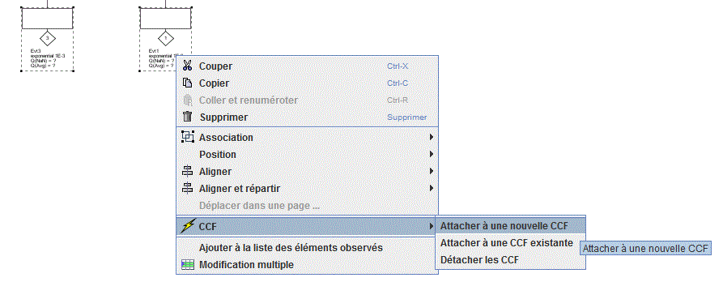
Il est possible d'éditer les propriétés d'une CCF de différentes manières :
Double-Cliquer sur la cellule voulue du tableau de données, puis editer.
Utiliser le menu contextuel de la ligne (CCF) selectionnée dans le tableau de données : Propriétés
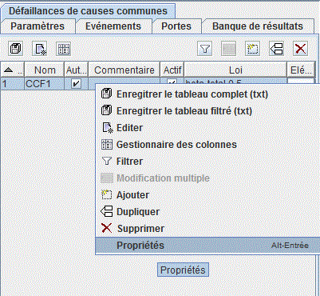S'ouvre alors la fenêtre d'edition suivante :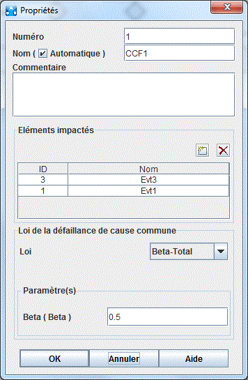
Deux types de lois sont aujourd'hui possible pour une CCF:
La loi beta-total : Applique le paramétre Beta aux lois des composants qui lui sont reliés Singularités :
Un composant peut être lié à plusieurs CCF utilisant la loi beta-total.
La sommme des beta définis sur les CCF doit être strictement inférieur à 1 pour un composant.
Les lois supportées pour les composants sont exponentiel, constante et test-périodique.
La loi beta-nucléaire : Les lois des composants sont remplacés par la loi définit par la CCF Singularités :
Un composant ne peut être lié qu'à une seule CCF utilisant la loi beta-nucléaire.
Les lois des composants ne sont plus utilisés.
Les lois supportées pour la CCF sont exponentiel, constante et test-périodique.
Au total, 10 lois sont disponibles sous le module Arbre de défaillance. A chacune de ces lois correspond un ou plusieurs paramètres dont voici les différents "types" possibles:
Probabilité: valeur comprise entre 0 et 1 inclus.
Taux: valeur supérieure ou égale à 0 correspondant à un taux de défaillance.
Durée: valeur supérieure ou égale à 0 correspondant à une durée ou à un temps.
Facteur: valeur strictement supérieure à 0.
Entier naturel: valeur entière supérieure ou égale à 0.
Booléen: peut prendre comme valeur 0 ou 1 correspondant à un paramètre option.
Autre: n'importe quelle valeur.
Dans la suite du chapitre, le "type" des paramètres sera précisé pour chaque loi.
Cette loi a deux paramètres: la probabilité q de l'événement, et l'intensité inconditionnelle w. Quel que soit le temps, la probabilité d'occurrence de la panne du composant est constante.
Paramètre:
q (Probabilité)
w (Intensité inconditionnelle de défaillance)
La définition de la loi est la suivante:

Cette loi correspond en général au cas où la seule défaillance considérée pour les composants est celle du refus de changer d'état (ex.: Fail to start/stop...).
Cette loi n'a qu'un seul paramètre: le taux de défaillance du composant (supposé constant au cours du temps). Elle décrit l'intervalle de temps avant la première défaillance pour un composant qui n'est pas réparable.
Paramètre:
Lambda (Taux) = taux de défaillance
La définition de la loi est la suivante:
Cette loi est largement utilisée car elle est quasiment la seule à rendre possible l'obtention de résultats analytiques. De plus, elle décrit très bien la période de vie d'un composant non-réparable (au moins lorsqu'il y a un grand nombre de composants) après la période de jeunesse.
Cette loi décrit le comportement d'un composant réparable (ou non), avec (ou sans) refus de démarrage à l'aide d'expressions exponentielles. Elle généralise la loi exponentielle à paramètre Lambda (taux de défaillance).
Paramètres:
Gamma (Probabilité) = probabilité de refus de démarrage initial (à t = 0)
Lambda (Taux) = taux de défaillance
Mu (Taux) = taux de réparation
La définition de la loi est la suivante:

Les paramètres Gamma et Mu sont optionnels, ils peuvent selon le cas être mis à zéro.
Si le composant n'est pas réparable il suffit de mettre Mu à zéro.
Si le composant ne peut pas tomber en panne au démarrage, il suffit de mettre Gamma à zéro.
Remarque: Le refus de démarrage n'est pris en compte qu'à t = 0.
Cette loi a trois paramètres: alpha, bêta et t0. Elle décrit le comportement d'un composant non-réparable et sans refus de démarrage. Sa particularité est qu'elle permet de prendre en compte la période de jeunesse et de vieillesse.
Paramètres:
Alpha (Facteur) = paramètre d'échelle
Bêta (Facteur) = paramètre de forme
T0 (Durée) = paramètre de localisation
La définition de la loi est la suivante:

L'intérêt de cette loi est qu'en faisant varier le facteur bêta, il est possible de tester et utiliser de nouvelles distributions:
Si Bêta est inférieur à 1, le taux de défaillance décroît et la loi permet alors de prendre en compte la période de jeunesse du composant.
Si Bêta est supérieur à 1, le taux de défaillance croît et la loi permet alors de prendre en compte la période de vieillissement du composant.
Si Bêta est égal à 1, la loi de Weibull est équivalente à la loi exponentielle.
Cette loi permet de représenter un composant qui tombe en panne selon une loi de distribution exponentielle et dont on constate la panne lors d'un test périodique. La réparation s'effectue ensuite de façon instantanée.
Paramètres:
Lambda (Taux) = taux de défaillance
Tau (Durée) = période de test (intervalle de temps entre deux tests consécutifs)
T0 (Durée) = date du premier test
La définition de la loi est la suivante:

Voici un petit graphe représentant les différentes phases de la "vie" du composant:

Remarque: Cette loi est une version simplifiée de la loi "TPC / Tests périodiques complète"
Cette loi permet de représenter un composant qui tombe en panne selon une loi de distribution exponentielle et dont on constate la panne lors d'un test périodique. La phase de réparation est ensuite modélisée par une exponentielle de paramètre Mu.
Paramètres:
Lambda (Taux) = taux de défaillance
Mu (Taux) = taux de réparation (une fois qu'un test a mis en évidence la panne)
Tau (Durée) = période de test (intervalle de temps entre deux tests consécutifs)
T0 (Durée) = date du premier test
Voici un petit graphe représentant les différentes phases de la "vie" du composant:

Remarque: Cette loi est une version simplifiée de la loi "TPC / Tests périodiques complète"
Cette loi permet de représenter un composant testé périodiquement de la manière la plus complète possible. Les paramètres intervenants sont nombreux.
Paramètres:
Lambda (Taux) = taux de défaillance en cours de fonctionnement ou d'attente
Lambda* (Taux) = taux de défaillance durant le test
Mu (Taux) = taux de réparation (une fois qu'un test a mis en évidence la panne)
Tau (Durée) = période de test (intervalle de temps entre deux tests consécutifs)
Téta (Durée) = date du premier test (valeur de non prise en compte: Tau)
Gamma (Probabilité) = probabilité de défaillance due au déclenchement du test (valeur de non prise en compte: 0 = le déclenchement du test n'entraîne pas de défaillance)
Pi (Durée) = durée du test (valeur de non prise en compte : 0 (test instantané))
X (Booléen) = indicateur de disponibilité du composant durant le test (= 0, le composant est indisponible durant le test; = 1, il est disponible) (valeur de non prise en compte: 1 = disponible durant le test)
Sigma (Probabilité) = taux de couverture du test (probabilité que la panne du composant soit détectée lors du test) (valeur de non prise en compte: 1 = le test couvre l'ensemble des pannes possibles)
Oméga 1 (Probabilité) = probabilité d'oubli de reconfiguration après le test (valeur de non prise en compte: 0 = pas de problème de reconfiguration après tes)
Oméga 2 (Probabilité) = probabilité d'oubli de reconfiguration après la réparation (valeur de non prise en compte: 0 = pas de problème de reconfiguration)
Remarque: La valeur dite de "non prise en compte" d'un paramètre est la valeur à saisir pour que ce paramètre n'ait pas d'influence dans le calcul de la disponibilité du composant.
Voici un petit graphe représentant les différentes phases de la "vie" du composant:
Cette loi prend deux paramètres : un taux de réparation Mu et un délai Delay. Elle donne, pour des composants non réparables, la probabilité de ne pas réussir à récupérer le composant avant un délai Delay.
Remarque: Cette loi ne dépend pas du temps, il s'agit d'un raccourci d'une loi constante.
Paramètres:
Mu (Taux) = taux de réparation
d (Durée) = délai de récupération
La définition de la loi est la suivante:
Cette loi est une variation de la loi "IND / Indisponibilité". En effet, elle correspond à la probabilité d'une loi "IND / Indisponibilité" calculé à t = infini.
Remarque: Cette loi ne dépend pas du temps, il s'agit d'un raccourci d'une loi constante.
Paramètres:
Lambda (Taux) = taux de défaillance
Mu (Taux) = taux de réparation
La définition de la loi est la suivante:

Cette loi a trois paramètres: un taux de défaillance, un temps moyen de réparation et un délai. De plus, elle ne dépend pas du temps.
Paramètres:
Lambda (Taux) = taux de défaillance
MTTR (Durée) = durée moyenne de réparation
d (Durée) = délai
La définition de la loi est la suivante:

Cette loi est un cas simplifié de la loi "IND / Indisponibilité". En effet, elle correspond à une loi exponentielle avec un temps fixe donné en paramètre.
Remarque1: Cette loi ne dépend pas du temps, il s'agit d'un raccourci d'une loi constante.
Remarque2: Le paramètre Q est optionnel.
Paramètres:
Lambda (Taux) = taux de défaillance
T (Durée) = temps de mission
Q (Probabilité) = valeur optionnelle
La définition de la loi est la suivante:

Cette loi n'en est pas une à proprement parler, elle permet de saisir la probabilité et le taux de défaillance au cours du temps dans un tableau.
Remarque: Si vous effectué des calculs à des dates qui n'ont pas été rentrés dans le tableau la valeur au temps demandée sera interpolée en fonction des points fournis.
Cette loi utilise un graphe de markov pour être définie. Il suffit de selectionner l'emplacement du fichier .jma. Pour que les calculs Booléen soient réalisables, il faut au préalable lancer un précalcul. Le précalcul lance automtiquement le module graphe de Markov pour récuperer les grandeurs nécessaires. Cette opération peut être effectuée en faisant un clic droit sur l'objet ayant cette loi, ou dans le menu Données et Calculs.
Cette loi a deux paramètres: une limite supérieure et une limite inférieure.
Paramètres:
a = limite supérieure
b = limite inférieure
La définition de la loi est la suivante:
Cette loi a deux paramètres: la moyenne et l'écart type.
Paramètres:
Mu = moyenne
Sigma = écart-type
La définition de la loi est la suivante:

Pour chaque loi de probabilité utilisée dans le modèle, il est possible d'introduire une incertitude sur chacun des paramètres. Trois lois sont disponibles pour les modéliser:
la loi "NLOG / Lognormale";
la loi "UNIF / Uniforme";
la loi "NORM / Normale".
Remarque: Chacune de ces lois est décrite dans le sous-chapitre précédent.
En utilisant cette méthode, il est donc possible d'introduire l'impact des incertitudes sur les données dans le résultat final.
Voici un arbre de défaillance modélisant le comportement d'un système de sécurité quelconque ayant deux états possibles: "marche" / "panne" (ou "disponible" / "indisponible"). Le but était donc de construire un arbre permettant d'évaluer l'indisponibilité moyenne du système.

L'arbre ci-dessus comporte neuf événements:
LS
Numéro: 1
Commentaire: "Logic"
Loi: loi exponentielle avec "Lambda" = Lambda1.
SV1
Numéro: 2
Commentaire: "Valve 1"
Loi: loi de test périodique simple avec "Lambda" = Lambda2, "Tau" = Test et "T0" = 0.
SV2
Numéro: 3
Commentaire: "Valve 2"
Loi: loi de test périodique simple avec "Lambda" = Lambda2, "Tau" = Test et "T0" = 10.
S1
Numéro: 4
Commentaire: "Sensor 1"
Loi: loi indisponibilité avec "Gamma" = Gamma, "Lambda" = Lambda1 et "Mu" = Mu2.
S2
Numéro: 5
Commentaire: "Sensor 2"
Loi: loi indisponibilité avec "Gamma" = Gamma, "Lambda" =à Lambda1 et "Mu" = Mu2.
S3
Numéro: 6
Commentaire: "Sensor 3"
Loi: loi indisponibilité avec "Gamma" = Gamma, "Lambda" = Lambda1 et "Mu" = Mu2.
R
Numéro: 7
Commentaire: "Relay"
Loi: loi indisponibilité avec "Gamma" = 0, "Lambda" = 10e-4 et "Mu" = Mu1.
SS_1
Numéro: 8
Commentaire: "Sub-system 1"
Loi: loi de test périodique complète avec "Lambda" = Lambda1, "Lambda*" = Lambda1, "Mu" = Mu1, "Tau" = 4380, "Téta" = 4380, "Gamma" = 0, "Pi" = 10, "X" = 0, "Sigma" = 1 et "Oméga" = 0.
SS_2
Numéro: 9
Commentaire: "Sub-system 2"
Loi: loi de test périodique complète avec "Lambda" = Lambda1, "Lambda*" = Lambda1, "Mu" = Mu1, "Tau" = 4380, "Téta" = 10, "Gamma" = 0, "Pi" = 10, "X" = 0, "Sigma" = 1 et "Oméga" = 0.
La logique de l'arbre est régit par quatre portes:
Div1
Numéro: 1
Nom: Or1
Commentaire: "ER"
Type: "OU"
Div1
Numéro: 2
Nom: And2
Commentaire: "VALVES"
Type: "ET"
Div1
Numéro: 3
Nom: KofN3
Commentaire: "SENSORS"
Type: "K sur N"
Div1
Numéro: 4
Nom: Or4
Commentaire: "Sub-systems"
Type: "OU"
Dans cet exemple, différents types de loi plus ou moins simple ont été utilisés. Elaboré en peu de temps, il a permis de modéliser plusieurs composants plus ou moins complexes: non-réparables, réparables, périodiquement testés, avec probabilité de défaillance à la sollicitation...
A l'aide de cet arbre, il est maintenant possible de lancer des calculs diverses sur les différentes portes ou événements: calculs d'indisponibilité, de défiabilité (avec MOCA), etc.
Concernant l'impression, l'utilisateur a plusieurs commandes à sa disposition dans le menu Fichier:
La fonction Mise en page permet de choisir l'orientation des pages, la dimension des marges...
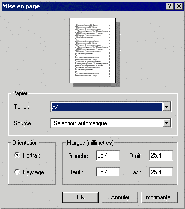La fonction Imprimer permet d'exporter tout ou partie du document au format .pdf. Les graphiques sont exportés dans un format vectoriel afin de pouvoir redimensionner ces derniers à votre convenance et sans dégradation.

Une fenêtre d'impression s'ouvre alors, l'utilisateur peut sélectionner les pages à imprimer et configurer les propriétés d'impression
Impression du document : Permet d'imprimer tout le document.
Impression de la page en cours : Permet d'imprimer la page en cours.
Impression de la sélection : Permet de sélectionner les pages ou groupes de pages à imprimer. L'option Impression les pages sélectionnées partiellement vous permet d'imprimer ou non les pages marquées d'un carré bleu.
Imprimer le cadre : Imprime un cadre autour de chaque page à imprimer.
Imprimer le nom du fichier : Imprime le nom du fichier en haut à gauche de chaque page.
Imprimer le numéro de page : Imprime le nom et le numéro en bas de chaque page .
Imprimer la date : Imprime la date en haut à droite de chaque page.
La fonction Sauver dans un fichier RTF...permet d'accéder dans un premier temps à une fenêtre appelée Propriété d'impression. Puis à une autre intitulée Information. Dans un troisième temps, l'utilisateur arrive sur une fenêtre permettant de choisir le dossier dans lequel il désire que le fichier RTF soit enregistré.

Lorsque l'utilisateur sélectionne la fonction Sauver dans un fichier RTF, c'est le cadre ci-dessus qui apparaît dans un premier temps. Il peut alors sélectionner ses préférences: imprimer le cadre, le nom du fichier, le numéro de la page ou/et la date.
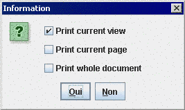Dans un second temps, c'est la fenêtre Information qui apparaît. Elle permet à l'utilisateur d'indiquer s'il veut enregistrer la vue courante, la page courante ou la totalité du document.
Sous le module Arbre de défaillance, il est possible d'utiliser les deux moteurs de calcul suivants:
Albizia
MOCA.
Les calculs par Albizia s'effectuent en deux étapes:
le parametrage des calculs;
la lecture des résultats dans la banque de resultat.
La fenêtre de paramétrage des calculs est accessible de deux manières différentes : soit par le menu Données et calculs - configuration et lancement du calcul.
La fenêtre de paramétrage qui est ainsi ouverte est appelée Lancement des calculs Albizia.
La fenêtre de paramétrage se décompose en de trois onglets (1 par type de calcul).
Cible: permet de définir la cible des calculs. Deux choix sont possibles : Sommet pour le(s) sommet(s) de l'arbre et Noeud sélectionné pour le noeud actuellement sélectionné dans l'arbre.
Calcul: permet de paramétrer les options de calculs.
Temps de calcul : Itération De A à B pas C: les calculs seront effectués pour des valeurs de t allant de A à B par pas de C.
Temps de calcul : Liste de temps: les calculs seront effectués pour les valeurs de t données dans cette liste.
Afficher les points de discontinuité: spécifie au moteur de calcul que les points de discontinuité doivent être pris en compte.
Temps exprimés en: Les valeurs spécifiées plus haut sont traité comme étant des heures. Si vous souhaité changer l'unité, vous pouvez choisir Heures, Jours, Mois, Années
Calculer la valeur moyenne sur [0, t]: spécifie au moteur de calcul que la valeur moyenne de chaque grandeur à calculer devra être calculée pour chaque temps de calcul.
Calculer l'intégrale sur [0, t]: spécifie au moteur de calcul que l'intégrale de chaque grandeur à calculer devra être calculée pour chaque temps de calcul.
Propagation d'incertitudes: permet d'activer la propagation d'incertitude, et de spécifier les paramètres de calculs et les résultats voulus.
Nombre d'histoires : nombre d'histoires (simulation de Monte-Carlo) effectuées.
Intervalle de confiance à : indique à combien de pourcent l' intervalle de confiance sera fourni
Quantiles choisis : Avec les résultats de toutes les histoires, un calcul de quantiles est effectué. Mais il existe toujours plusieurs possibilités de choisir des bornes contenant X pourcents des valeurs. Ici il est possible de prendre l'intervale à gauche (commencant au minimum et finissant au quantile X%), ou a droite (commencant a 100-X % et finissant au maximum), ou intervalle centré.
Type de calculs: permet de définir les calcul à effectuer.
Indisponibilité : qui selon les normes et pays est notée Q(t), U(t) ou PFD(t)
Disponibilité : A(t) = 1 - U(t)
Intensité Inconditionnelle de Défaillance : qui selon les normes et pays est notée W(t), UFI(t) ou PFH(t). C'est la probabilité que le système tombe en panne entre t et t+dt, sachant qu'à t=0 le système n'est pas défaillant.
Intensité Conditionnelle de Défaillance (Lambda eq) : qui selon les normes et pays est notée CFI(t), λeq(t) ou λVesely(t). C'est la probabilité que le système tombe en panne entre t et t+dt, sachant que le système n'est pas défaillant à t et qu'à t=0 il n'était pas défaillant non plus.
Defiabilité : F(t) = 1 - R(t)
Fiabilité : R(t) = R(t)=exp[-(Intégrale de 0 à t) de LbdEq(u)du]. Ici on remarque donc que la fiabilité est basée sur le lambda équivalent et non sur le lambda réel. C'est une bonne approximation qui est de plus conservative. Il n'est de toute façon pas possible de calculer une fiabilité sur un arbre de défaillance. Pour les systèmes composés de composants non réparables, le résulat est même éxact (puisqu'il est égal à la disponibilité).
Calcul de temps passé dans les zones : Pour les valeurs ci dessus, cette options permet de savoir quel pourcentage du temps elles sont restées dans tel ou tel interval. Ces intervalles sont configurables en cliquant sur le bouton configuration. Ils sont par défaut configurés pour les calcul SIL.


Cible: permet de définir la cible des calculs. Deux choix sont possibles : Sommet pour le(s) sommet(s) de l'arbre et Noeud sélectionné pour le noeud actuellement sélectionné dans l'arbre.
Nombre de coupes: le nombre de coupes minimales de système (pas limitation d'ordre).
Nombre de coupes par ordre: la synthèse du nombre de coupes pour chaque ordre (pas limitation d'ordre).
Liste de coupes: la liste des coupes minimales du système. L'ordre maximal peut être fixé grâce à l'option Limiter l'ordre des coupes affichées.
Limiter l'ordre des coupes affichées: permet de limiter l'ordre des coupes affichées. Les coupes d'ordre supérieur à l'ordre saisi ne seront pas affichées.
Calculer la probabilité des coupes à: permet d'indiquer à quel temps seront calculées les probabilités des coupes.
Cible, temps de calculs, incertitudes : cf. Calcul de probabilités
Types de calculs: permet de définir les facteurs d'importance à calculer.
Birnbaum (MIF)
Critique (CIF)
Fussel-Vesely (DIF)
Risk Achievement Worth (RAW)
Risk Reduction Worth (RRW)
La configuration manuelle du calcul MIF permet de choisir l'algorithme utilisé.
Dérivée partielle: Utilisation d'un algorithme rapide basée sur les dérivée partielle. A n'utiliser que pour les arbres cohérents.
Cofacteur Exclusif: Utilisation d'un algorithme (moins rapide) utilisant le cofacteur exclusif afin de rester valide sur les formules non cohérentes.
BDD: Utilisation d'un algorithme basé sur les BDD (seulement pour arbres cohérents)
GRIF permet (via le moteur Albizia) d'effectuer des calculs d'UFI sur des abres non cohérents. La mode automatique permet de prendre en compte tous les cas de figure, mais il est possible de spécifier les algorithme à utiliser. Il existe deux manières de calculer l'UFI :
Calcul UFI via MIF Ceci est la méthode "classique". Soit un système S composés de plusieurs composants c, l'UFI (aussi noté w) du système est égale à la UFIS = wSΣ MIF(S,c)*wc. Cet algorithme est moins performant que celui basé sur les BDD, mais fonctionne sur les arbres non cohérents (si le MIF est bien calculé).
Calcul UFI via BDD Ceci est la méthode "rapide" qui est basée sur le parcourt d'un BDD. Cette méthode n'est pas applicable sur les arbres non-cohérents, sauf cas particulier des calculs avec événements initiateurs (cf options ci-dessous).
Pour expliquer l'option Prise en compte de l'ordre "non-iniatiateur" puis "initiateur" prenons un cas simple : un système composé d'un barrière de sécurité qui met le système dans un état sûr lors de la detection d'un événement initiateur. L'événement redouté est la non détection de l'événement initiateur par la barrière. La fréquence de l'événement redouté résulte de deux cas de figure :
la barrière est déjà en panne (avec une certaine probabilité) et l'événement iniateur se produit (avec une certaine fréquence)
l'événement iniateur s'est déja produit (avec une certaine probabilité) et la barrière tombe en panne (avec une certaine fréquence)
Lorsqu'une défaillance de cause commune est utilisée, le logiciel calcul un lambdaDCC qui sera utilisé pour la DCC. C'est ce paramètre qui sera multiplié par le Beta. Puisque les composants ont différents lambdas, il y a plusieurs méthode de calculer le lambdaDCC à partir de la liste des lambdas. Five methods are available :
Minimum : Utilise le lambda minimum. Non recommandé.
Maximum : Utilise le lambda maximum afin de rester concervatif. Solution utilisée dans GRIF 2013 et versions antérieures. Peux être pénalisante lorsque les lambdas des composants sont très variés.
Moyenne : Utilise la moyenne arithmétique des lambdas des composants impactés.
Moyenne géométrique (Méthode PDS): Utilise la moyenne géométrique des lambdas des composants impactés. Méthode PDS préconisée par le Sintef. Cette méthode fonctionne bien même avec des lambdas variés.
Moyenne arithmétique : Utilise la moyenne quadratique des lambdas des composants impactés.

Les résultats sont présenté sous la forme d'une fenêtre composée de 4 onglets.
Probabilité
Facteurs d'importance
Coupes
XML
L'onglet Probabilités regroupe les résultats de tous les calculs de probabilités. La partie supérieure affiche les pourcentage de temps passés dans chaque zone (si le calcul a été demandé). Ensuite un tableau de synthèse présente le minimum, le maximum, la moyenne, la somme. Dans le cas de calcul avec propagation d'incertitude, une colonne supplémentaire affiche l'intervalle de confiance de la moyenne.

L'onglet Facteurs d'importance affiche les facteurs d'importance pour tous les événements pour les systems spécifiés.
L'onglet Coupes présente les résultats du calcul de coupe. Dans la synthèse, une coupe d'ordre 0 signifie que l'evénement redouté est toujours vrai, cela peut arriver si certaines partie sont forcées à VRAI.
L'onglet XML contient la sortie XML d'Albizia
Les calculs par MOCA-RP V12 s'effectuent en trois étapes principales:
le paramétrage général;
le lancement proprement dit;
la lecture du fichier résultat.
La fenêtre de paramétrage des calculs est accessible de deux manières différentes: soit par le menu Données et calculs - Données Moca soit par Données et calculs - Lancer Moca 12.... La différence entre les deux est que dans le second cas, l'étape de paramétrage est directement suivie par l'étape de lancement des calculs.
La fenêtre de paramétrage qui est ainsi ouverte est appelée Lancement des calculs Moca:
Cette fenêtre de paramétrage est composée de plusieurs parties:
Titre: permet de donner un titre au fichier résultat.
Temps de calcul par défaut:
Itération De A à B pas C: les calculs seront effectués pour des valeurs de t allant de A à B par pas de C.
Liste de temps: les calculs seront effectués pour les valeurs de t données dans cette liste.
Calcul effectué à: les calculs sont effectués par défaut juste après le tir des transitions, mais il est possible de choisir de calculer à t-Epsilon (juste avant le tir), ou au deux instants.
Unité: les calculs sont effectués par défaut en heures. Il est possible de spécifier l'unité dans laquelle ont été saisis les temps de calcul. Attention, les résultats seront toujours afficher en heures.
Général:
Nombre d'histoires : Nombre d'histoires (NH) à simuler
1er N° au hasard: Graine du générateur de nombres aléatoires.
Temps de calcul maximum: Temps (en secondes) au bout duquel Moca arrêtera de simuler de nouvelles histoires.
Durée automatique de l'histoire: Si cette case est cochée, GRIF va calculer la durée de l'histoire en fonction des temps de calcul de l'ensemble des variables et états statistiques. Sinon l'utilisateur peut spécifier la Durée d'une histoire
Calcul multi-processeurs: Permet d'activer le calcul multi-processeurs et d'indiquer le nombre d'instances Moca lancées.
Activer la propagation d'incertitude: Activation ou non des calculs de propagation des incertitudes (simulation à double-détente): il est nécessaire ici de spécifier le nombre de jeux de paramètres "joués" (le nombre réel d'histoire ainsi simulé sera de "nombre de jeux de paramètres x nombre d'histoires à simuler" et sera affiché dans le champ "Nombre total d'histoires").
Variables:
L'onglet variables rappelle et permet de modifier la configuration du calcul pour chaque variable. Si le document contient des états statistiques, un onglet supplémentaire sera disponible.
Options de Sortie: permet de paramétrer la sortie.
Impression ou non de la description du réseau de Petri dans le fichier résultat
Impression du fichier résultat permettant de le recharger à l'aide d'un tableur (type EXCEL)
Impression ou non des délais censurés
Nombre de sorties durant la simulation (si 2, alors il y aura une sortie au bout de NH/2 et une au bout de NH)
Options avancées: utilisé pour configurer les options avancées.
Vous pouvez choisir la limite pour le nombre de tirs instantanés avant détection d'une boucle.
A partir de GRIF 2010, les résultats sont présentés dans une fenêtre avec différents onglets et tableaux.
Les données Moca sont présentées sous la forme d'une fenêtre contenant 6 onglets principaux : variables, places, transitions, XML, sortie stantard, info.
L'onglet Variables contient toutes les informations calculées pour les variables (ou états statistiques).
Valeurs : Contient toutes les valeurs des variables pour tous les types de statistiques calculés.
Historique (en fin d'histoire) : Contient l'historique des valeurs en fin d'histoire pour tous les types de statistiques calculés.
Histogramme de taille fixe : Contient les histogrammes calculés par Moca (cf chapitre sur les histogrammes)
Histogramme de classe équiprobable : Contient les histogrammes calculés par Moca (cf chapitre sur les histogrammes)
Histogramme à intervalles définis : Contient les histogrammes calculés par Moca (cf chapitre sur les histogrammes)
Chronogramme : Contient le chronogramme de chaque variable. Les temps sont calculés automatiquement par Moca.
Il contient les temps de séjour et les marquages moyens pour toutes les places du réseau de Petri.
L'onglet Transitions contient la féquence de tir de chaque transition ainsi que l'historique du tir des transitions pour chaque histoire.
Des onglets supplémentaires affichent les résultats de manière plus "brute". L'onglet XML contient la sortie XML du moteur de calcul, c'est à partir de ce document que les valeurs ont été extraites. Ce fichier peut être réutilisé pour un post-traitement ultérieur.
L'onglet sortie standard affiche la sortie standard du processus Moca. (disponible seulement après le calcul)
L'onglet info regroupe les informations relatives au calcul (temps de simulation, durée d'histoire, nombre d'histoires jouées)
Les tableaux de résultats sont composés des données en elle même et d'une partie supérieure permettant de configurer l'affichage du tableau.
Les colonnes sont triables en effectuant un clic sur leur en-tête, l'icone
 permet de fixer un
filtre sur le tableau en le définissant grace à la fênetre suivante.
permet de fixer un
filtre sur le tableau en le définissant grace à la fênetre suivante.

Les valeurs visibles du tableau peuvent être exportées au format CSV en cliquant sur l'icone .
Il est aussi possible d'afficher les résultats sous la forme d'une courbe
en cliquant sur l'icone
 .
Les données à utiliser en abscises et en ordoonnées doivent être spécifiées
dans la fenêtre suivante :
.
Les données à utiliser en abscises et en ordoonnées doivent être spécifiées
dans la fenêtre suivante :
Nb : Une fois la courbe dans le document les points sont figés.
Les panneaux de présentation des résultats ont été créés pour améliorer l'accès aux données dans les tableaux comportant de nombreuses colonnes. L'objectif est de faire un tri préalable pour ne garder que les données voulues.
Le menu déroulant en haut à droite permet de choisir une colonne C qui sera utilisée pour decouper le tableau en plusieurs tableaux qui sont mis chacun dans un onglet dont le titre est egal à la valeur par laquelle la colonne C est filtrée. La colonne C est supprimée des tableaux car elle contient toujours la même valeur pour un onglet donné.
Afin de faire des études de sensibilité, ou tous simplement pour comparer des résultats avec différents paramètres, il est utile pour pouvoir enchainer plusieurs calculs avec une petite modification sur le modèle. Pour cela il faut utiliser le menu Données et Calculs/ Calcul par lots.
Nom du calcul : pour identifier le calcul dans les résultats
Options de calculs : contient toutes les options concernant le calcul (temps, types ...)
Modification du modèle : indique les modifications qui seront effectuées sur le modèle avant de lancer les calculs. Vous pouvez ajouter autant de modifications que vous le souhaitez avec le boutons +. Chaque modification est réalisés en 4 parties :
1 menu déroulant indiquant le type d'objet à modifier
1 menu déroulant déroulant indiquant l'objet lui même
1 menu déroulant pour indiquer quelle information doit être modifiée pour cet objet (valeur pour un paramètre, loi pour d'autre type d'objet ...)
Enfin une cellule permet de spécifier la nouvelle valeur
Après un calcul, le modèle est toujours repositionné dans son état d'origine sans modification.
Tous les calculs de GRIF sont stockés dans une banque de résultats qui est accéssible dans un onglet sur la droite du module.
Afin de mieux étudier le modèle et les résultats, il est possible de tracer des courbes. Pour cela, il suffit de faire un clic gauche sur l'icône correspondante de la barre des tâches verticale puis de tracer un cadre. Ce cadre sera l'espace alloué à l'affichage de la ou les courbes. Au départ ce n'est qu'un cadre blanc avec deux axes non gradués.
Icône :

Il faut maintenant définir les courbes à tracer. Pour cela, il suffit de faire un clic droit sur le cadre et faire ainsi apparaître la fenêtre d'édition des courbes.
La fenêtre d'édition des courbes est la même pour tous les modules de GRIF.

Cette fenêtre est divisée en plusieurs parties:
Titre du graphique: permet de donner un titre au graphique.
Liste de données: Cette partie comporte un tableau de plusieurs colonnes dans lequel sont listées les différentes courbes du graphique (nom, description, affichage, couleur de courbe, style de courbe, épaisseur de courbe, affichage le la moyenne). Au-dessus de ce tableau, plusieurs boutons sont disponibles.
 :
Permet de sélectionner un résultat de calculs à afficher.
Il renvoie l'utilisateur vers la fenêtre Sélection de résultats afin
d'ajouter un tracé de courbe au graphique (cf. « Courbes depuis les données de la banque de résultats »).
:
Permet de sélectionner un résultat de calculs à afficher.
Il renvoie l'utilisateur vers la fenêtre Sélection de résultats afin
d'ajouter un tracé de courbe au graphique (cf. « Courbes depuis les données de la banque de résultats »).
 :
Permet de comparer plusieurs résultats de calculs différents pour une même donnée.
Il renvoie l'utilisateur vers la fenêtre Comparaison de résultats afin
d'ajouter un tracé de courbe au graphique (cf. « Courbes comparatives depuis les données de la banque de résultats »).
:
Permet de comparer plusieurs résultats de calculs différents pour une même donnée.
Il renvoie l'utilisateur vers la fenêtre Comparaison de résultats afin
d'ajouter un tracé de courbe au graphique (cf. « Courbes comparatives depuis les données de la banque de résultats »).
: modifie le tracé de courbe sélectionné.
 : supprime le tracé de courbe sélectionné du graphique.
: supprime le tracé de courbe sélectionné du graphique.
 : fait remonter le tracé de courbe sélectionné dans la liste.
: fait remonter le tracé de courbe sélectionné dans la liste.
 : fait descendre le tracé de courbe sélectionné dans la liste.
: fait descendre le tracé de courbe sélectionné dans la liste.
: enregistre sous format CSV la liste des points calculés pour le tracé des courbes sélectionnés. Cet export ne contient pas les grandeurs génériques, pour avoir un export avec les grandeurs génériques il faut faire un clic droit sur la courbe et faire .
: crée une nouvelle courbe exactement identique au tracé de courbe sélectionnée.
 : Permet de figer l'affichage de cette courbe.
Cette dernière ne se mettra plus automatiquement à jour en fonction des résultats de calculs.
: Permet de figer l'affichage de cette courbe.
Cette dernière ne se mettra plus automatiquement à jour en fonction des résultats de calculs.
Pour chaque courbe il est possible de spécifier sa couleur, son style de points, son épaisseur et son affichage.
Options de calcul: permet de paramétrer le calcul (optionnel suivant les modules).
Style: Cette partie concerne l'affichage des courbes.
Type de style: spécification du type de toutes les courbes du graphique (ligne, histogramme, ...). Attention, dans le cas du style histogramme, les barres sortant de la zone d'affichage seront affichées en dégradé pour prévenir l'utilisateur qu'il doit changer les intervalles d'affichages pour voir la barre entièrement.
Intervalles permet de définir les bornes d'affichage de la courbe. Automatiques sans pic : le graphique ne fera pas apparaitre les "pics", cas particuliers de valeurs hors normes, qui rendrait illisible le graphique. Sans afficher ces pics graphiquement, il est donné la possibilité de faire paraitre leurs valeurs en utilisant les choix proposés par l'option Afficher les valeurs des pics.
Intervalles sur X et Y: spécification de l'intervalle d'affichage des axes X et Y (intervalles par défaut ou définis par l'utilisateur). Cette dernière fonction peut permettre par exemple de "zoomer" sur les parties les plus intéressantes du graphique.
L'unité des axes peut être choisie en fonction du type de résultat de calculs. Par exemple pour des unités de temps, l'unité pourra être choisie parmi heures, jours, mois et années.
Le bouton
 permet d'afficher ou non l'unité sur le graphique.
permet d'afficher ou non l'unité sur le graphique.
Les cases log permettent d'activer l'échelle logarithmique sur l'axe concerné. Attention, le 0 n'est pas représentable en échelle log, pensez à indiquer un début strictement positif (E-10 par exemple). Si 0 est indiqué, l'échelle log commencera à une valeur arbitraire E-15. Lorsque le moteur de calcul le permet, il est possible d'afficher l'intervalle de confiance, en cochant la case correspondante.
Zones: Permet de distinguer sur un fond de couleur les plages de valeurs (zones).
En style histogramme, une case à cocher permet de faire un histogramme cumulé.
Option d'affichage: permet d'activer ou non la fonction Afficher le titre (affichage du titre du graphique) et la fonction Afficher les grandeurs génériques (affichage du min, du max et de la moyenne de chaque courbe).
Lorsqu'une courbe est éditée, la fenêtre d'édition d'une courbe contient souvent 3 parties : les temps auxquels le calcul est réalisé, ce qui est calculé, les informations supplémentaires (grandeurs génériques) qui doivent être affichées ou non sous la courbe.
Remarque : il est parfois nécessaire de rafraîchir tous les graphiques d'un document.
Pour cela il faut utiliser la commande Outils / Rafraîchir
ou utiliser le raccourci clavier F5 ou l'icône  .
.
Lorsque l'utilisateur clique sur le bouton de la partie Liste de données, une fenêtre permet de spécifier la courbe à tracer. Toutes les courbes représentent des informations stockées dans la base. La fenêtre suivante permet d'indiquer la manière de récupérer ces informations.

Légende: légende de la courbe.
Sélection du calcul: permet de choisir dans la banque de résultats le calcul à utiliser.
Résultat à afficher: un calcul contient souvent plusieurs résultats, cette arborescence permet de spécifier le résultat que l'on souhaite dans le calcul.
Vous avez la possibilité d'afficher la liste des points en spécifiant les données voulues sur chacun des axes ; ou vous avez la possibilité d'afficher les temps passés dans les zones.
Axes: Permet d'indiquer ce qui doit être mis en abscisse et en ordonnée.
Grandeurs à afficher: Enfin il en possible d'afficher certaines informations supplémentaires (min, max, moyenne ....)
Lorsque l'utilisateur clique sur le bouton de la partie Liste de données, une fenêtre permet de spécifier la courbe à tracer. On peut alors choisir d'afficher un résultat issu de plusieurs calculs différents. La fenêtre suivante permet d'indiquer la manière de récupérer ces informations.

Légende: légende de la courbe.
Calculs à utiliser: permet de choisir dans la banque de résultats les différents calculs à utiliser. Maintenez la touche Ctrl appuyez pour effectuer une sélection multiple des calculs.
Résultat à afficher: un calcul contient souvent plusieurs résultats, cette arborescence permet de spécifier le résultat que l'on souhaite afficher.
Information à afficher: Indique quelle donnée doit être affichée en ordonnée.
Pour quel point ?: Indique quel point du calcul doit être comparé aux autres.
Afficher les abscisses suivant la valeur: Indique quelle donnée doit être affichée en abscisse.
Grandeurs à afficher: Enfin il en possible d'afficher certaines informations supplémentaires (min, max, moyenne ....)
Dans chaque module de GRIF, il est possible d'établir une connexion à une base de données. Il y a la possibilité de faire deux connexions de type différent:
connexion à un fichier de type CSV;
connexion par un lien JDBC.
Ce type de connexion est le plus simple à réaliser. Un fichier de type CSV a pour extension ".csv". C'est un simple fichier texte où les différents champs sont séparés pas des virgules, des tabulations ou des points-virgules. C'est la forme la plus simple que peut avoir une base de données.

Pour connecter GRIF à cette base de données, il suffit d'aller dans le menu Outils - Connexion à un fichier CSV. Une boîte de dialogue apparaît alors:

Cette fenêtre est divisée en trois parties:
Dans un premier temps, il faut enter le chemin menant au fichier CSV. Pour cela, un explorer est à disposition (bouton ). Une fonction Test permet de vérifier la connexion.
Ensuite, il faut enter les noms des cinq champs du fichier CSV.
Enfin, il faut préciser le type de séparateurs utilisés dans le fichier CSV.
Attention: Il est important de noter que pour réaliser une connexion de type CSV, il est impératif que toute la base soit sur une seule feuille.
Au départ, la base de données peut être sous la forme d'un fichier de type EXCEL ou ACCESS. Ensuite, à l'aide du système d'exploitation, il est nécessaire de créer une source de données système de type ODBC. Dans le cas de WINDOWS par exemple, cette opération s'effectue au niveau du menu "Panneau de configuration - Outils d'administration - source de données (ODBC)". Voici l'exemple d'une base de données sous EXCEL:

Pour connecter GRIF à cette base de donnée de type ODBC, il suffit d'aller dans le menu Outils - Options de l'application - Base de données. L'utilisateur se retrouve alors avec une fenêtre à compléter de la manière suivante:
Remarques:
Driver JDBC est le nom du driver JDBC (ex: sun.jdbc.odbc.JdbcOdbcDriver)
Connexion à la base est constitué du lien ODBC suivit du chemin d'accès à la base (ex: jdbc:odbc:C:\...\repDatabase)
Les champs Login et Mot de passe sont inutiles ici.
La requête SQL SELECT ID,NOM,VALEUR,DESCRIPTION,DIMENSION FROM [Feuil1$] permet la récupération des données de la base. Feuil1 est le nom de la feuille EXCEL sur laquelle sont les données.
L'objectif est maintenant de relier certains paramètres du modèle à la base de données. Pour cela, il faut commencer par faire afficher la colonne Connecté à au niveau du tableau des paramètres (faire un clic droit sur la partie haute des colonnes).
Il suffit ensuite de faire un double clic dans la colonne Connecté à pour voir apparaître les éléments de la base de données. Une fois qu'un de ces éléments a été sélectionné, il faut cliquer sur pour valider la connexion. Le paramètre prend alors la valeur de l'élément auquel il est maintenant relié.
Remarque: Le bouton en bas de tableau intitulé permet de casser le lien entre le paramètre et l'élément de la base de données.
Si certaines valeurs de la base de données à laquelle est lié GRIF sont modifiées, il est possible de faire une mise à jour des paramètres connectés à cette base. Pour cela, il suffit de faire apparaître la fenêtre Base de données en allant sur Données et calculs - Mise à jour depuis la base de données.

Les paramètres dont la valeur n'est pas à jour sont automatiquement détectés et marqués en gras. Il est alors possible de sélectionner un ou plusieurs de ces paramètres afin de les mettre à jour en utilisant le bouton . Deux autres boutons sont à disposition pour faciliter la sélection: (permet de désélectionner tous les paramètres du tableau) et (permet de sélectionner tous les paramètres du tableau).
Il est aussi possible de copier directement des paramètres depuis la base, en utilisant le menu Données et Calculs/Base de Données/Copier des paramètres de la base. Une fenêtre s'ouvre et permet de sélectionner les paramètres que vous souhaitez copier dans le document. Les paramètres créés seront automatiquement reliés au bon paramètre dans la base.
Voici un récapitulatif de toutes les informations qui peuvent être sauvegardées à partir d'un même modèle.
Il est bien évidemment possible d'enregistrer et recharger les modèles qui sont réalisés. Il suffit pour cela d'aller dans Fichier - Enregistrer ou dans Fichier - Enregistrer sous....

Le menu Enregistrer en tant que modèle permet de sauvegarder le document en tant que modèle dans le répertoire Template du module. Il est alors possible de créer de nouveaux fichiers à partir de ce modèle en utilisant l'action du menu Nouveau (à partir d'un modèle)...
Un modèle peut également être enregistré au format RTF. Cela permet de recharger ensuite cette sauvegarde sous WORD afin d'insérer la partie graphique du modèle dans un document quelconque. Il suffit pour cela d'aller dans Fichier - Sauver dans un fichier RTF....

Remarque: Il existe un moyen plus simple et plus rapide pour insérer un modèle dans un rapport. En effet il suffit de sélectionner sous GRIF la partie à insérer, de la copier puis de la coller directement sous WORD.
Au moment où les données d'entrée pour le moteur de calcul sont générées, il est possible de les sauvegarder. Ce type de fichier a pour extension ".don". Ils peuvent être ainsi modifiés à l'aide d'un éditeur de texte puis rechargés pour lancer des calculs dessus (par exemple). Toutefois, ce genre de manipulation n'est pas conseillé à des utilisateurs "novices"...
Les résultats de calculs peuvent être sauvegardés dans divers formats :
export d'un tableau en particulier au format CSV :

export de l'ensemble des résultats :

Sauvegarder le fichier résultat : Permet d'enregistrer le contenu de l'onglet Résultats (format xml)
Rapport avancé : Permet de générer des rapports en utilisant des feuilles de style
Sauvegarder la sortie standard : Permet d'enregistrer le contenu de l'onglet Info (format txt)
Sauvegarder le fichier de donnée du moteur : Permet d'enregistrer le fichier de donnée envoyé au moteur de calcul (format txt)
Enregistrer en feuille de calculs XML 2003 (XMLSS) : Permet d'enregistrer l'ensemble des tableaux de résultat dans un format XML compatible avec Microsoft(r) Excel 2003 et plus.

Le menu Outils - Options de l'application ouvre une fenêtre avec les onglets suivants :
L'onglet Exécutables permet d'indiquer les chemins des exécutables externes :
Editeur : Permet d'indiquer l'exécutable à utiliser pour éditer les données.
Client mail : Permet de spécifier le client mail à utiliser
Ouvrir automatiquement les PDF : Permet d'indiquer si les rapports PDF doivent être ouverts après génération.
Feuille de style XML vers DocBook. : Feuille de style permettant de convertir le rapport XML en fichier docbook.
Feuille de style XML vers HTML. : Feuille de style permettant de convertir le rapport XML en fichier docbook.
Feuille de style DocBook vers PDF. : Feuille de style permettant de convertir un fichier docbook en fichier pdf.
Chemin de Moca-RPC : Indique le chemin de Moca version 12.
Chemin de javaw : Chemin de l'exécutable javaw.exe :
L'onglet Base de données permet de configurer la connexion à une base de données :
Utiliser la connexion à la base de données : Indique s'il faut ou non se connecter à la base de données.
Nom : Le nom de la base sera inscrit dans les paramètres lors de leur mise à jour. Cela permet de savoir depuis quelle base il a été mis à jour la dernière fois.
Driver JDBC : Permet de saisir le nom du driver à utiliser pour se connecter à la base (sun.jdbc.odbc.JdbcOdbcDriver, oracle.jdbc.driver.OracleDriver, ...).
Connexion à la base : Url de connexion où se trouve la base.
Option de connexion : Propriétés de la connexion.
Login : Login à utiliser pour se connecter à la base.
Mot de passe : Password à utiliser pour se connecter à la base.
Requête SQL : Requête qui doit être exécuté pour récupérer les informations utiles.
Nom du champ pour l'ID : Nom du champ contenant l'identifiant des données.
Type d'identifiant : Type de champ de l'identifiant (INTEGER, FLOAT, VARCHAR(32), ...).
Nom du champ pour le nom : Nom du champ contenant le nom des données.
Nom du champ pour la valeur : Nom du champ contenant la valeur des données.
Nom du champ de description : Nom du champ contenant la description des données.
Nom du champ de dimension : Nom du champ contenant la dimension des données.
Tester la connexion : Nom du champ contenant la description des données.
L'onglet Langue permet de choisir sa langue :
Langage : Le changement de langue est effectif lors de la fermeture de la fenêtre d'option. Les langues disponibles sont le Français et l'Anglais.
L'onglet Options regroupe les options modifiant le comportement de l'application :
Enregistrer les options du document courant comme options par défaut dans l'application : Enregistre les options du document courant comme les options par défaut de l'application.
L'application gère les options par défaut des documents. Appliquer les options par défaut au document courant : Applique les options -options d'application- au document courant.
Delai en minutes des sauvegardes automatiques : Delai entre chaque sauvegarde automatique. Une valeur <= 0 désactive la fonctionnalité.
Nombre maximum d'annulations : Indique le nombre d'annuler/refaire disponible.
Nombre de fichiers récents : Indique le nombre de fichier dans la liste des fichiers récemment ouverts.
Affichage des fenêtres : Permet d'avoir des tableaux indépendants (externes) ou non (internes) de la fenêtre principale.
Colonnes redimensionnées dans les tableaux : Permet de choisir sur quelle(s) colonne(s) sera pris l'espace lors d'un redimensionnement de colonne.
Gérer les nouveaux noms en évitant les doublons : Permet d'éviter les conflits de nom en créant des objets dont le nom est unique (lors des copier/coller principalement).
Ajouter le suffixe "Copy" lors des copier-coller : Permet d'ajouter le suffixe "Copy" au nom des objets collés.
Synchroniser la vue avec les tableaux : Provoque la sélection d'un objet dans les tableaux de données quand on le sélectionne dans la vue.
Synchroniser la vue avec l'arborescence : Provoque la sélection d'un objet dans l'arborescence quand on le sélectionne dans la vue.
Dans les résultats, afficher la description à la place du nom par défaut : Permet d'afficher les commentaires/descriptions des objets dans les fenêtre de résultats. Cela est parfois plus utile que d'afficher un nom par défaut sans signification.
Découpage automatique des fichiers importés : Découpage automatique de l'abre lors de l'import de fichiers (*.xml or *.dag)
Découpage automatique à partir de la profondeur : Lorsque l'arbre est découpé automatiquement, la coupe sera faite à partir de la Nième porte.
L'onglet Graphique permet de modifier l'aspect de la base graphique :
Utiliser le style Windows : Utilise le look and feel de votre système à la place du style java (nécessite un redémarrage de GRIF).
Taille des éléments : Permet de changer la taille des éléments graphiques.
Taille des commentaires : Permet de spécifier la taille de la police des commentaires.
Taille des groupes : Permet de spécifier la taille de la police des groupes.
Activer le réticule : Active un réticule permettant d'aligner les objets lors de leur sélection.
Activer le lissage du texte : Active l'anti-aliasing (lissage) sur les textes, ce processus peut ralentir l'affichage.
Activer le lissage des dessins : Active l'anti-aliasing (lissage) sur les dessins, ce processus peut ralentir l'affichage.
Afficher les info-bulles : Active le système d'infobulle.
<html>Utiliser le symbole des portes <br>lors de la mise en page <html> : Utilise seulement le symbole de la porte pour la centrer horizontalement lors de la mise en page automatique, et pas la totalité de la porte (zone pointillée lors de la sélection).
L'onglet format numérique permet de choisir le format des nombres affichés dans l'application :
Affichage des paramètres : Permet de spécifier le format d'affichage pour les paramètres (chiffres après la virgule, ...)
L'onglet Evénements permet de modifier l'affichage des événements. :
Taille des labels : Permet de spécifier la taille de la police du label.
Afficher le nom : Permet d'afficher ou non le nom.
Afficher la description : Permet d'afficher ou non la description.
Afficher la loi : Permet d'afficher ou non la loi.
Afficher les DCC : Permet d'afficher ou non les défaillances de causes communes.
Afficher objectif : Affiche l'objectif de valeur à coté de chaque porte.
Informations supplémentaires : Permet d'afficher des informations supplémentaires (résultats de calculs)
Utiliser une loi par défaut : Permet d'utiliser une loi particulière comme loi par défaut.
Loi par défaut : Permet de définir la loi à utiliser par défaut.
Hauteur du commentaire : Hauteur (en pixels) du commentaire situé en haut de l'évènement. La valeur par défaut est 40.
Largeur du commentaire : Largeur (en pixels) du commentaire situé en haut de l'évènement. La valeur par défaut est 100.
L'onglet Portes/Renvois permet de modifier l'affichage des portes et renvois :
Taille des labels : Permet de spécifier la taille de la police du label.
Afficher le nom : Permet d'afficher ou non le nom.
Afficher la description : Permet d'afficher ou non la description.
Affichage du K/N : Permet d'afficher ou non le K/N.
Afficher la localisation des renvois : Affiche l'ensemble des renvois relatifs à la porte.
Afficher objectif : Affiche l'objectif de valeur à coté de chaque porte.
Informations supplémentaires : Permet d'afficher des informations supplémentaires (résultats de calculs)
Affichage du nom de la source des renvois : Affiche le nom de la porte à laquelle correspond le renvoi.
Affichage de la page de la source des renvois : Affiche la page où se situe la porte à laquelle correspond le renvoi.
Hauteur du commentaire : Hauteur (en pixels) du commentaire situé en haut de la porte. La valeur par défaut est 40.
Largeur du commentaire : Largeur (en pixels) du commentaire situé en haut de la porte. La valeur par défaut est 100.
L'onglet Courbes permet de modifier la manière de tracer les courbes :
Encadrer le graphique : Permet d'encadrer le graphique.
Encadrer les grandeurs génériques : Permet d'encadrer les données génériques situées sous les courbes.
Afficher la grille : Permet de tracer un quadrillage sur la zone de tracer de courbes.
Afficher les légendes : Permet d'afficher ou non la légende sous les courbes.
Transparence de la zone de tracé : Permet de rendre transparent la zone où les courbes sont tracées.
Transparence du graphique : Permet de rendre transparent la zone du graphique autour de la zone de tracer.
Taille du titre : Permet de spécifier la taille de la police du titre du graphique.
Taille des grandeurs génériques : Permet de spécifier la taille de la police des données génériques.
Taille des points : Permet de spécifier la taille des points dessinés sur les courbes.
Taille des coordonnées : Permet de spécifier la taille de la police des coordonnées.
Taille des légendes : Permet de spécifier la taille de la police des légendes.